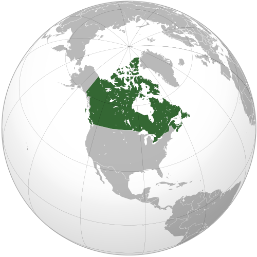

Общая информация
 Кана́да, одна из самых больших стран мира, занимает почти всю северную половину Северной Америки и прилегающие к ней острова. Единственная страна, с которой Канада имеет сухопутную границу, — США. Две трети из более чем 30-миллионного населения страны проживает в двухсоткилометровой полосе вдоль этой границы. Канада известна своими необозримыми степями, красивейшими горами и богатством недр, лесов и вод. По размеру Канада уступает только России. Западное побережье страны высокое, обрывистое и изрезанное заливами. Неподалеку находится большое количество островов. Восточное побережье тоже обрывисто и живописно изрезано бухтами и заливами. Наиболее глубокими заливами атлантического побережья Канады являются залив Св. Лаврентия и Фанди. Океан замерзает лишь на короткое время в году, но туманы и штормы мешают регулярному судоходству. Аппалачские горы расположены на юго-востоке Канады. На запад от Канадского щита расположены Великие равнины. На побережье Тихого океана раскинулись Кордильеры. Хотя большая часть земли занята озерами и заросшими лесами низинами, в Канаде есть и горные массивы, равнины и даже небольшая пустыня. Великие Равнины, или прерии, покрывают Манитобу, Саскачеван и части провинции Альберта. Канада славится своей густой и полноводной сетью рек. Канаду пересекают такие могучие реки, как Макензи, Колумбия, Ниагара, река Св. Лаврентия и многие, многие другие. Макензи является самой длинной рекой всей северной части материка: ее протяженность — свыше 4,5 тыс. км. Почти две трети всех рек Канады относятся к бассейну Северного Ледовитого океана. Везде, кроме самой южной части страны, реки покрываются льдом на период от 5 до 9 месяцев в год. Такие реки, как Ниагара и река Св. Лаврентия играют важную роль в экономике Канады, служа транспортными путями между Канадой и США, а также источниками электроэнергии, которую вырабатывают гидроэлектростанции, установленные на них. Изобилующая порогами Колумбия, пролегающая в западной части страны, тоже подходит для гидростроительства, однако в качестве транспортного пути ее почти не используют. Озер в Канаде, больших и малых, насчитывают около 4 миллионов. Самые крупные — это, конечно, Великие озера, Большое Невольничье, Большое Медвежье и др. Озера Канады невероятно красивы благодаря своей чистоте воды и живописным скалистым берегам. Вода в них — прозрачнее воздуха. Озера — любимое место отдыха канадцев. Климат Канады характеризуется четырьмя ярко выраженными временами года. Условия весьма разнообразны и зависят, главным образом, от ландшафта — горных или водных массивов. Канада — первая страна, которая подписала Венскую Конвенцию о защите озонового слоя планеты в июне 1986 года. В 1995-97 годах ООН называла Канаду лучшей страной в мире для проживания человека. В Канаде очень высокий уровень продолжительности жизни, что во многом зависит от экологической обстановки, и среднего уровня дохода населения. Треть всех доходов канадцев приносит деятельность, связанная с окружающей средой. Леса покрывают почти 50% канадских земель. Вообще, Канада располагает 10% мировых лесов и большими запасами нефти, газа, угля и других полезных ископаемых. Великие Озера остаются главным источником свежей воды в Канаде. Четыре из пяти озер Канада делит с США. Соглашение о качестве воды в Великих Озерах, подписанное между Канадой, Онтарио и США, помогает улучшить экологическую обстановку и предотвратить загрязнение внутренних вод материка. Население Канады насчитывает всего около 33 миллионов человек .Росту населения в равной мере способствует иммиграция и естественный прирост населения. По оценкам экспертов, в 2026 году Канада будет насчитывать 36,2 миллиона жителей. Продолжительность жизни в Канаде — 74,9 лет для мужчин и 81,4 года для женщин. Это один из самых высоких показателей в мире.
- Столица - г. Оттава (45º19´ с.ш., 75º40´ з.д.)
- Площадь: 9 млн 017,6 тыс. км²
- Население 33 млн 740 тыс. чел. (оценка на 2009), 79.7% - горожане
- Основные народы: канадцы 82.5%, выходцы из южной Азии 4%, китайцы 4%, афроамериканцы 2.5%, филиппинцы 1.3%, латиноамериканцы 0.9%, выходцы из юго-восточной Азии 0.8%, североамериканские индейцы 2.2%, метисы 1.2%, эскимосы 0.2% (данные переписи 2006 года)
- Языковое распределение: англоязычное население 57.2%, франкоязычное население 19.7%, считают родными другие языки 19.7%
- Государственные языки: английский, французский
- Государственный строй – конституционная монархия; федеративное государство, состоящее из 10 провинций и 3 территорий
- Глава государства – британский монарх (со 2 июня 1953 - королева Елизавета II ), представленный генерал-губернатором
- Глава правительства – премьер-министр, лидер победившей на выборах парламентской партии (с 6 февраля 2006 – Стивен Харпер, Stephen Harper)
- Парламент двухпалатный, состоит из Палаты Общин ("Зеленой палаты", 308 депутатов) и Сената ("Красной палаты", 105 сенаторов, представляющих провинции и территории)
- Телефонный код различается по стране: 8-10-1613 в Оттаве, 8-10-1514 в Монреале, 8-10-1416 в Торонто
- Разница во времени с Москвой: в стране 6 часовых поясов: тихоокеанский, горный, центральный, восточный, атлантический и ньюфаундлендский. Частично провинции и территории переходят на летнее время (со второго воскресенья марта по первый понедельник ноября) Карта канадских часовых поясов для зимнего времени; для летнего времени; Разница во времени между Москвой и провинцией Онтарио (где находятся Оттава и Торонто: -8 часов в период действия в Канаде летнего времени и -9 часов в период зимнего времени
- Денежная единица: канадский доллар (по стандарту ISO обозначается CAD, внутри страны CAN$, C$ или просто $), в 1 долларе 100 центов.
- Доменная зона в Интернете .ca
- Место в рейтинге нестабильности: 168 (из 177 в 2011; в 2010 г. 166-е место из 177; в 2009 г. 166-е место из 177; в 2008 г. 167-е место из 177; в 2007 г. 168-е место из 177; в 2006 139-е место из 146).